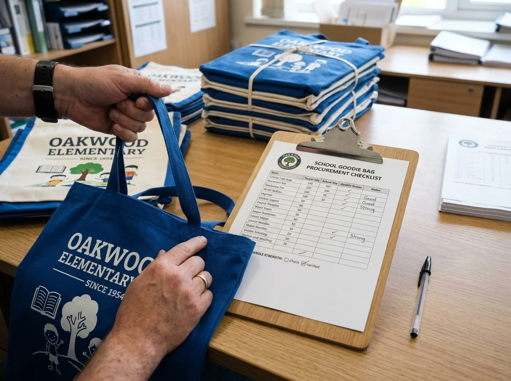

Cara Menghitung Anggaran dan Membagikan Goodie Bag Sekolah

Anggaran goodie bag sekolah dihitung dari biaya isi, tas, cetak, pengemasan, pengiriman, serta cadangan agar seluruh paket sesuai jumlah siswa.
📌 Ringkasan Inti Panduan:
- Tetapkan batas total anggaran dan jumlah penerima terlebih dahulu.
- Hitung biaya paket lengkap, termasuk desain, cetak, sampel, dan ongkos pengiriman.
- Periksa contoh fisik serta jumlah barang sebelum membagikan ke siswa.
- Kelompokkan paket berdasarkan kelas atau lokasi distribusi untuk mencegah paket tertukar.
1. Bagaimana cara menghitung anggaran goodie bag sekolah?
Anggaran goodie bag sekolah dimulai dari jumlah penerima dan spesifikasi isi, lalu ditambah biaya produksi kemasan, pengiriman, serta kebutuhan cadangan.
Rumus sederhana yang dapat dipakai adalah:
Biaya lengkap per paket meliputi tas dan semua barang di dalamnya. Biaya tetap dapat mencakup biaya desain, pembuatan contoh, atau pengaturan cetak bila vendor menagihnya terpisah. Jangan mencampur biaya satuan dengan biaya total agar tidak terjadi penghitungan ganda.
Sebagai ilustrasi hipotetis, sebuah sekolah memerlukan 200 paket dengan biaya tas Rp8.000, buku kecil Rp4.000, pensil Rp2.000, dan kartu acara Rp1.000. Biaya isi serta tas menjadi Rp15.000 per paket, atau Rp3.000.000 untuk 200 paket. Jika biaya persiapan dan pengiriman diasumsikan Rp300.000 serta cadangan biaya Rp200.000, anggaran ilustratif menjadi Rp3.500.000. Angka ini hanya contoh aritmetika, bukan penawaran harga pasar atau harga vendor tertentu.
Untuk kebutuhan nyata, mintalah rincian tertulis dari penyedia. Perbedaan jumlah pesanan, bahan, desain, dan kota tujuan dapat mengubah harga secara signifikan.
2. Apa saja komponen biaya yang sering terlewat?
Selain tas dan isinya, panitia perlu memperhitungkan cetak logo, kemasan tambahan, sampel, pengiriman, biaya revisi, serta kemungkinan perubahan jumlah siswa.
| Komponen Biaya | Pertanyaan yang Perlu Dikonfirmasi |
|---|---|
| Tas dan isi | Apakah semua item sudah masuk ke dalam rincian harga satuan paket? |
| Branding dan sablon | Apakah sablon atau cetak logo sekolah dikenai biaya film/setting tambahan? |
| Sampel fisik (mockup) | Apakah pembuatan contoh fisik awal dibayar terpisah atau masuk tagihan pesanan? |
| Packing per kelas | Apakah sortir dan pengelompokan rapi per kelas sudah termasuk layanan vendor? |
| Ongkos kirim | Apakah ongkos ekspedisi sampai lokasi gerbang sekolah sudah tercantum jelas? |
| Perubahan desain | Apakah revisi susulan setelah persetujuan (approval) dikenai biaya tambahan? |
| Alokasi cadangan | Apakah ada cadangan anggaran untuk paket rusak mendadak atau siswa tambahan? |
Materi pengguna menyebut contoh paket beranggaran rendah Rp5.000 hingga Rp10.000. Kisaran tersebut dapat digunakan sebagai gambaran ide, bukan patokan umum bahwa semua paket custom dan kebutuhan pengiriman pasti tercukupi. Saat menilai harga, bandingkan penawaran dengan spesifikasi identik. Harga per tas saja tidak menjelaskan biaya akhir acara.
Jangan mengurangi kualitas barang yang berkaitan dengan keselamatan hanya untuk mengejar nominal tertentu. Pilih isi lebih sedikit bila diperlukan agar anggaran tetap terjaga.
3. Bagaimana menentukan jumlah paket dan kebutuhan cadangan?
Jumlah paket harus mengikuti daftar peserta yang telah diverifikasi, dengan cadangan yang diputuskan panitia sesuai risiko perubahan atau kerusakan saat distribusi.
Mulailah dari data siswa per kelas atau kelompok. Periksa apakah guru, pendamping, tamu, atau peserta lomba dari luar sekolah juga menerima paket. Hindari menggabungkan mereka tanpa kode karena kebutuhan isinya bisa berbeda.
Sebagai contoh perhitungan, jika terdapat empat kelas berisi masing-masing 30 siswa, kebutuhan utama adalah 120 paket. Jika panitia menetapkan cadangan lima paket untuk perubahan atau kerusakan, total pesanan menjadi 125 paket. Lima paket tersebut adalah keputusan contoh, bukan persentase cadangan yang wajib untuk semua sekolah.
Simpan daftar kuantitas per kelas dalam satu tabel bersama status 'siap', 'sudah diterima', dan 'selesai dibagikan'. Pastikan jumlah final disetujui sebelum vendor memulai produksi. Penambahan jumlah mendadak dapat berdampak pada waktu penyelesaian dan biaya.
4. Kapan sebaiknya sekolah mulai memesan?
Pemesanan sebaiknya dimulai cukup awal agar tersedia waktu untuk menyepakati spesifikasi, memeriksa sampel, menyelesaikan produksi, dan menangani pengiriman.
Materi referensi memberikan contoh persiapan H-30 sampai H-60 untuk bingkisan custom dan pengepakan pada H-4. Angka tersebut dapat menjadi kerangka perencanaan awal, bukan durasi universal semua vendor atau kegiatan sekolah. Dalam praktiknya, jadwal perlu bergantung pada kerumitan desain, jumlah paket, ketersediaan barang, dan jarak pengiriman.
Susun tenggat internal untuk pengumpulan data, pemilihan contoh, persetujuan desain, tanggal produksi, pemeriksaan kualitas, dan penerimaan barang. Jangan menggunakan tanggal acara sebagai tanggal barang tiba. Sisakan ruang bagi panitia untuk menghitung ulang, memisahkan paket, dan memperbaiki kesalahan sebelum siswa datang.
Untuk barang makanan yang tidak tahan lama, waktu pengepakan harus mengikuti ketentuan penyimpanan dan keamanannya, bukan otomatis dimasukkan pada jadwal yang sama dengan alat tulis atau tas kain.
5. Bagaimana memeriksa kualitas sebelum seluruh paket dibagikan?
Pemeriksaan kualitas yang sederhana mencakup jumlah tas, kelengkapan isi, posisi logo, kondisi jahitan atau pegangan, dan kesesuaian label kelas.
Minta contoh paket lengkap sebelum memulai pengemasan massal. Letakkan seluruh isi sesuai posisi akhirnya, lalu uji apakah tas dapat ditutup atau diangkat tanpa membuat isi terjepit. Periksa jahitan di area yang menahan beban dan baca logo dari jarak normal. Jika menggunakan stiker atau cetak khusus, cek apakah nama acara dan ejaannya benar.

Setelah barang datang, lakukan pemeriksaan penerimaan dengan mencocokkan surat pesanan, jumlah koli, dan kondisi kemasan. Untuk pesanan besar, panitia dapat memakai prosedur sampling yang disepakati atau pemeriksaan penuh bila kapasitas memungkinkan. Jangan mengklaim inspeksi sampel mewakili seluruh produk tanpa catatan metode serta hasilnya.
Barang rusak atau tidak sesuai sebaiknya dipisahkan dan didokumentasikan sebelum distribusi. Konfirmasi kepada vendor bagaimana prosedur penggantian dan batas waktunya.
6. Bagaimana mengatur distribusi goodie bag per kelas?
Distribusi goodie bag sekolah menjadi lebih lancar jika setiap paket dikelompokkan, diberi kode jelas, dan diserahkan melalui penanggung jawab sesuai rencana acara.
Buat daftar jumlah paket untuk setiap kelas dan lokasi. Gunakan label pada karton atau kantong pengiriman yang memuat kode kelas, jumlah, dan jenis paket. Label luar biasanya lebih aman dibanding menuliskan data pribadi siswa di permukaan tas. Apabila terdapat paket guru atau tamu, gunakan kode terpisah.
Saat penerimaan, petugas kelas menghitung kuantitas, menandatangani atau mengonfirmasi jumlah, lalu melaporkan selisih jika ada. Ketika acara mulai, distribusi dapat dilakukan per baris, kelompok, atau titik pengambilan sesuai kondisi ruang dan jumlah petugas. Jangan membuka seluruh kemasan bersamaan jika hal itu membuat pencatatan menjadi sulit.
Untuk acara di beberapa lokasi, buat tabel serah-terima sederhana yang mencantumkan unit yang disiapkan, dikirim, diterima, dan sisa. Catatan tersebut membantu panitia memastikan tidak ada kelas kekurangan paket sementara kelas lain menerima kelebihan.
7. Apakah lebih hemat merakit sendiri atau memesan paket lengkap?
Merakit sendiri dapat menghemat sebagian biaya jasa, tetapi membutuhkan waktu panitia, tempat penyimpanan, kontrol kualitas, dan koordinasi pembelian dari beberapa sumber.
Paket lengkap dari vendor memusatkan tanggung jawab produksi serta pengemasan, tetapi rincian harga, pilihan isi, dan tingkat fleksibilitas berbeda-beda. Bandingkan kedua opsi menggunakan total biaya dan kebutuhan tenaga, bukan hanya harga satu item.
Jika sekolah merakit sendiri, tetapkan satu contoh paket sebagai acuan agar isi seluruh kelas konsisten. Perhatikan bahan pembungkus yang aman, tata letak barang berat, dan kebersihan area pengepakan. Jangan menambahkan barang hanya untuk membuat tas terlihat penuh. Prinsip utamanya adalah barang tidak bergeser berlebihan dan mudah diperiksa kembali.
Untuk merancang isi sebelum menghitung biaya, lihat panduan isi goodie bag sekolah berdasarkan usia. Jika kebutuhan sudah jelas, lanjutkan ke halaman goodie bag sekolah custom untuk menyiapkan spesifikasi pemesanan.
8. FAQ perencanaan anggaran dan distribusi
9. Kesimpulan praktis
Anggaran dan distribusi goodie bag sekolah perlu dirancang sebagai satu proses: tentukan kebutuhan, hitung biaya lengkap, periksa sampel, lalu serahkan paket secara terdata. Dengan prosedur sederhana tersebut, sekolah dapat mengurangi kesalahan tanpa mengulang pembelian yang tidak perlu.
Ditulis oleh Tim Redaksi Goodie Bag
Disusun dan dikurasi oleh tim produksi Goodie Bag Malang. Menghadirkan wawasan praktis seputar pemilihan bahan kain, teknik sablon, dan efisiensi pengadaan souvenir tas sejak 2016.
Artikel Terkait Seputar Goodie Bag Sekolah